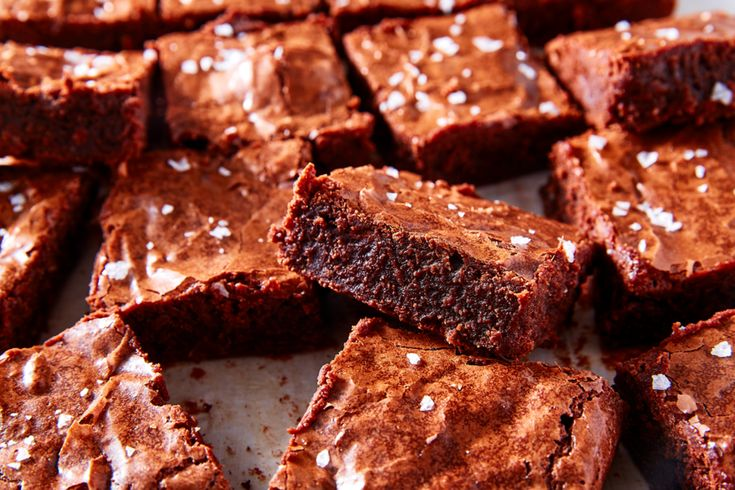

My special brownie recipe

Description
My special brownie recipe. I just can't stop making it.
It's inspired by one of the most acclaimed and widely used brownie recipes on the Internet, created
by Katharine Hepburn's Brownies. Duo to its simplicity and rich, fudgy texture, it became popular
after being published in the New York Times following Hepburn's death in 2003 and has since garnered
over 11,000 five-star reviews.
Ingredients
- 1/2 cup (1 stick) unsalted butter
- 2 ounces unsweetened chocolate
- 1 cup granulated sugar
- 2 large eggs
- 1/2 teaspoon vanilla extract
- 1/4 cup all-purpose flour
- 1/4 teaspoon salt
- 1 cup chopped walnuts or pecans (optional)
Steps
- Preheat Oven: Set your oven to 325°F (163°C).
- Melt Butter and Chocolate: In a saucepan over low heat, melt the butter and unsweetened chocolate
together, stirring until smooth. Remove from heat and let it cool slightly.
- Mix in Sugar: Stir in the granulated sugar until well combined.
- Add Eggs and Vanilla: Beat in the eggs one at a time, then add the vanilla extract.
- Incorporate Dry Ingredients: Gently fold in the flour and salt until just combined. If using nuts,
fold them in as well.
- Bake: Pour the batter into the prepared pan and bake for about 35-40 minutes, or until a toothpick
inserted into the center comes out with moist crumbs attached.
- Cool and Serve: Allow the brownies to cool completely in the pan before cutting into squares.
Back to home